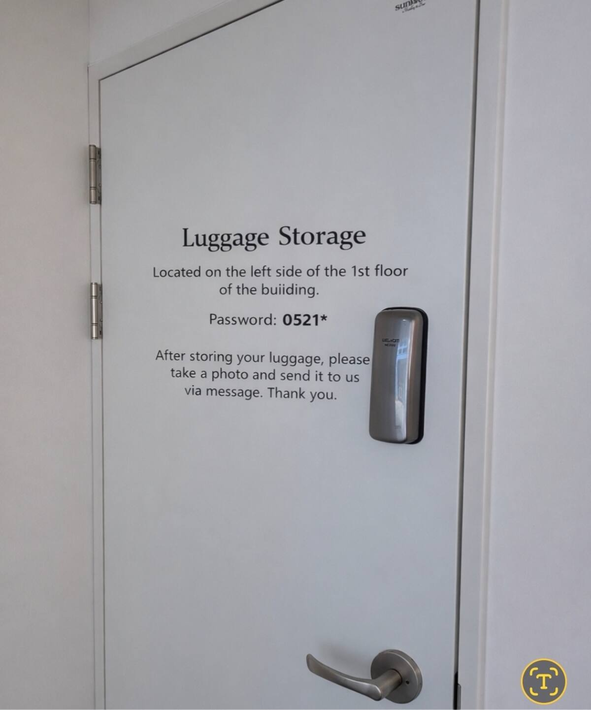

⚠️ 梅雨季提醒：7 月為韓國梅雨季末尾，建議每天出門前查看天氣預報。行程中標有 🌧️ 藍點 的時段附有室內備案。
🏨 住宿資訊
首爾
弘大 Hongdae
地鐵 2 號線／機場快線：弘大入口站 홍대입구 239/A03/K314
機場快線直達，首爾夜生活與美食中心，看完球賽回來不怕沒東西吃。
📍 48-21 Wausan-ro 29-gil 301호, 마포구, 서울 04052
機場快線直達，首爾夜生活與美食中心，看完球賽回來不怕沒東西吃。
📍 48-21 Wausan-ro 29-gil 301호, 마포구, 서울 04052
Check-in 7/18（Day 1）16:00／ Check-out 7/22（Day 5）上午
🧳 早到先用 1 樓行李寄放間（密碼 0521*），看完球賽再入住
🧳 早到先用 1 樓行李寄放間（密碼 0521*），看完球賽再入住
釜山
西面 Seomyeon
釜山地鐵 1／2 號線：西面站 서면 119/219
兩大主線交會處，去社稷球場最順，地下街與美食商圈密集。
📍 36 Seojeon-ro 9beon-gil 3층, 부산진구, 부산 47246
兩大主線交會處，去社稷球場最順，地下街與美食商圈密集。
📍 36 Seojeon-ro 9beon-gil 3층, 부산진구, 부산 47246
Check-in 7/22（Day 5）中午／ Check-out 7/24（Day 7）上午
🗺️ 行前準備清單
出發前（台灣完成）
- 購買旅遊保險（含醫療、班機延誤、行李遺失）
- 換韓圜：台灣先換一部分或備免手續費海外提款卡；明洞／弘大換匯所匯率較佳
- 訂購 韓國 SIM / eSIM（Klook、KKday 或機場取件），否則無法用 Google Maps、叫 Kakao T
- ✅ KTX 首爾→釜山 已開票（KTX 101，09:33→12:53，6 連號）
- ✅ 7/18 蠶室球賽 Klook 套裝已確認（訂單 AEJ429161）→ 當天 15:30 集合（出口看賽前 1 天 email）
- 🥇 約 7/1（14:00 KST）搶 7/22 社稷樂天球票（NOL World，全趟最早最難，6/30 起盯緊）
- 6/26（五）請代購代訂 7/21 高尺巨蛋球票（6 張）
- 7/7–7/9 Sky Capsule 補票行動（7/6 查 7/23 不可訂，疑未開賣）：約 7/9 刷官網＋查 Klook/Trazy＋搭乘前 1–2 天刷退票；Day 6 已改為不依賴膠囊的動線，補不到也不影響（見 Day 6）
- 確認弘大飯店 7/18 提早 Check-in 或行李寄放（預計下午 2 點前到，14:30 前要出發去球場集合）
必裝 APP
Naver Map 導航
Kakao T 叫車
Papago 翻譯
Ticketlink Global
NOL World
Klook
其他準備
- 購買 T-money 交通卡（仁川機場便利商店即售，入境即可加值）
- 評估 KR PASS（外國人鐵路通票；若只單程一次，買單張較划算）
- 備妥緊急聯絡：駐韓國台北代表部 ☎ +82-2-399-2780／24h 急難救助 +82-10-9080-2775
📅 詳細行程規劃
D1
7/18 六
抵達首爾，首戰蠶室
上午・交通會合
台北 中華航空 CI160（TPE 07:55 → ICN 11:30）／高雄 CI164（KHH 07:05 → ICN 11:00）。仁川 T2 會合後搭 AREX 一般列車（非直達！直達不停弘大）至弘大。⏰ 約 13:30~14:00 抵達。
抵達・行李寄放（入住前）🧳
⚠️ 入住時間為下午 16:00，我們到得早＋15:30 要去球場集合，先把行李放到寄放間、看完球賽再回來入住。
🧳 行李寄放間（Luggage Storage）
• 位置：建築物 1 樓左側（Located on the left side of the 1st floor）
• 密碼：0521*
• 放好行李後：拍一張照片，用訊息傳給房東（After storing your luggage, take a photo and send it to us via message）
• 位置：建築物 1 樓左側（Located on the left side of the 1st floor）
• 密碼：0521*
• 放好行李後：拍一張照片，用訊息傳給房東（After storing your luggage, take a photo and send it to us via message）

下午・提早往球場、附近輕鬆活動
放完行李就直接搭地鐵 2 號線往 綜合運動場站（約 30–40 分）。Klook 套裝賽前已含共餐，白天不另安排正餐，路上或集合點周邊喝點飲料、輕鬆逛即可（可順遊 COEX／樂天世界塔，但別走遠）。
💡 提早到集合點附近活動，把交通緩衝拉大，避免塞車／迷路錯過 15:30 集合。
傍晚・熱血看球（Klook 套裝）🌧️
15:30 於綜合運動場站（종합운동장 218）集合（賽前 2.5h），出示電子憑證。弘大入口搭地鐵 2 號線約 30–40 分，建議放完行李就出發（約 14:00–14:15），提早到場周邊活動較保險。
⚾ LG 雙子（主）vs KT 巫師（客）｜18:00 開打｜✅ Klook 套裝已確認（訂單 AEJ429161）
球賽＋韓食體驗套裝（主辦 Garlic Bros）：賽前一起吃 韓式烤肉／炸雞（約 1.5h）→ 進場看球（約 3h，含一杯手工啤酒），全程英／韓語導遊，可中途離開。
⚠️ 集合出口看賽前 1 天 email 通知（1／7／8 號其一），請勿照 Klook 憑證！ 套裝不保證特定座位（門票賽前 7 天才開，主辦會再通知）。
🌧️ 露天球場，遇大雨主辦可能改高尺巨蛋或取消（會提前通知）。免費取消期限 7/17 00:00（韓國時間）。
🔭 觀賽重點
資料查證 2026-06；先發投手、傷況、戰績為浮動資訊，賽前再確認。
LG 雙子（主）2026 聯盟 #1・衛冕冠軍
23奧斯汀 오스틴一壘／DH
本場最大看點。2026 打擊率約 .349、OPS 破 1.08 聯盟第一，長打／全壘打並列聯盟第一，MVP 與全壘打王雙料熱門，球迷暱稱「奧隊長」。
2文保景 문보경三壘🏅 2024 世界12強・2026 WBC
國家隊主力左打，2026 WBC 刷新第一輪最多打點紀錄，綽號「Super Moon」。
51洪昌基 홍창기右外野🏅 2024 世界12強
頂級上壘機器、國家隊外野手，6/20 已回到先發第一棒（傷癒復出，出賽狀態賽前確認）。
KT 巫師（客）2026 聯盟 #2
10金賢洙 김현수一壘／DH
本場一大話題。國民打者級老將，2026 季前由 LG 轉隊 KT，這場正好回到老東家 LG 的主場蠶室作客，特別有看頭。
1高永表 고영표投手🏅 2024 世界12強・2026 WBC
KT 本土王牌，招牌變速球，若當天輪值先發是壓制 LG 強打的關鍵。
43安賢民 안현민外野🏅 2026 WBC
KT 新生代強打，開季火燙後因腿傷離隊，6 月中傳回歸（出賽待確認）。
📌 焦點：聯盟前二強直接對決（含金量高）＋金賢洙回老東家作客＋奧斯汀里程碑競逐。⚠️ 原 KT 看板姜白虎已轉隊韓華，本場不會出賽。
🛍️ 主場商品（LG 雙子）應援棒（塑膠加油棒，約 ₩10,000）、黃色「無敵」應援毛巾（約 ₩8,000）、球帽（約 ₩29,000）、主／客場球衣（約 ₩39,000，可現場加印背號／名字：奧斯汀、洪昌基、朴海旼）、logo 小球（約 ₩6,000）。賣店在蠶室一壘側 Apparel／Authentic Shop（比賽日營業）；線上 lgtwins.com/shop、NOL MD shop。💡 KBO 已停用充氣加油棒（막대풍선），現場主力為塑膠應援棒＋應援毛巾。
D2
7/19 日
韓國潮流與文青復古
上午・韓屋早午餐
10:00 益善洞韓屋村（鐘路三街站 종로3가 130/329/534）。傳統韓屋巷弄，在「清水堂」或「溫水房」享用咖啡甜點。
下午・首爾布魯克林 🌧️
13:30 聖水洞（聖水站 성수 211）。逛廢棄工廠改建的快閃店（Dior、Tamburins）與選物店，吃「倫敦貝果博物館」或鹽麵包。
🌧️ 備案：COEX Mall 星空圖書館（三成站 삼성 219），室內逛整天。
晚上・弘大夜生活
18:30 回 弘大商圈（弘大入口站 홍대입구 239）看街頭表演。晚餐 烤豬五花／烤牛腸（小豬存錢筒，或新村「站著吃烤肉 서서갈비」性價比高）。
D3
7/20 一
職棒休兵日・傳統市集
上午・採購
10:00 首爾站樂天超市（首爾站 서울역 133/426/A01/P313）大採購泡麵、零食、海苔，戰利品可寄回飯店或放寄物櫃。
下午・廣藏市場
13:30 廣藏市場（鐘路五街站 종로5가 129）。必吃綠豆煎餅、麻藥紫菜包飯、生拌牛肉（Yukhoe）配水梨絲。15:30 沿 清溪川散步消化。
晚上・東大門一隻雞
18:30 東大門（동대문 128/421）。晚餐 陳玉華老奶奶一隻雞。餐後逛 DDP 東大門設計廣場拍夜景。
D4
7/21 二
巨蛋觀賽體驗・高尺巨蛋
上午・梨大商圈
10:30 梨花女子大學商圈（梨大站 이대 241）漫步校園、逛平價服飾。
下午・漢江悠閒
12:30 The Hyundai Seoul 現代百貨（汝矣島站 여의도 526/915），地下美食街吃韓式中華：炸醬麵、炒碼麵、糖醋肉。14:30 步行至 汝矣島漢江公園（여의나루 527），租野餐墊用自動煮麵機煮泡麵。
晚上・巨蛋朝聖
17:00 高尺巨蛋（九一站 구일 142，步行 15 分；或弘大計程車約 20 分／₩12,000）。
⚾ Kiwoom 英雄（主）vs 三星獅（客）（18:30 開打）
💡 全室內球場，不受天候影響，三場中最穩定。
🔭 觀賽重點
資料查證 2026-06；先發投手與排名為浮動資訊，賽前再確認。
Kiwoom 英雄（主）2026 聯盟墊底 #10・傷兵眾多
41安佑鎮 안우진投手
「聯盟最強本土王牌」。手術＋兵役缺席逾兩年，2026 強勢回歸，復出飆 160 km/h；若當天先發是「見證王牌重生」的話題場。
54阿爾坎塔拉 라울 알칸타라投手
綽號「高尺之王」，主場宰制力極強的洋投王牌。
—崔周煥 최주환一壘／DH
背號待確認。金惠成、宋成文相繼挑戰大聯盟後，與安致弘等老將撐起打線核心。
三星獅（客）2026 聯盟 #3・上位圈強隊
5具滋昱 구자욱左外野🏅 2026 WBC
球隊看板隊長級球星；長年膝傷，可能改任 DH 或輪休。
0迪亞茲 디아즈一壘
上季 KBO 最佳打者級洋砲，三星打線最大火力。
18元兌仁 원태인投手🏅 2026 WBC（後因故替換退出）
三星本土王牌、國手級右投，穩定度極高（先發輪值待確認）。
47姜珉鎬 강민호捕手
活傳奇老將，KBO 捕手最多全壘打、2025 達成捕手史上首位 350 轟里程碑。
📌 焦點：上位強客（三星）對墊底主場（英雄），但英雄有「高尺之王」與回歸火球王牌坐鎮，存在以下剋上張力。全室內巨蛋恆溫約 25°C，三場中觀賽最舒適、不受梅雨影響；室內回音讓應援聲量特別震撼。
🛍️ 主場商品（Kiwoom 英雄）粉紅款應援棒（約 ₩9,000）、球帽（約 ₩35,000）、球衣（客製背號 marking kit 約 ₩20,000–22,000，需約 2 週、想要特定球員建議行前線上下單）、「춘배와친구들」吉祥物聯名（高尺巨蛋限定）、logo 小球（約 ₩5,000）。賣店「히어로즈샵」在高尺巨蛋 C 中央出入口旁，僅主場比賽日營業；線上 heroesbaseball.co.kr、NOL MD shop、KBO마켓。
D5
7/22 三
轉戰釜山・釜山狂熱
上午・KTX 移動
08:30 從弘大入口搭 AREX 一般列車（各站停，2 站約 7 分）到首爾站。✅ 已開票 KTX 101 直達，09:33 首爾 → 12:53 釜山（經濟座 NT$1,117／人，6 連號第 12 車廂）。
💡 票券編號 20260622355967（6 人同一訂位）。抵達 12:53 接得上下午南浦洞行程。
下午・南浦洞小吃
12:30 抵釜山西面飯店（可先寄放行李）。14:00 BIFF 廣場＆富平罐頭市場（札嘎其站 자갈치 110），吃 堅果黑糖餅與魚糕串。順遊 龍頭山公園＆釜山塔（南浦站 남포 111）。
晚上・社稷狂熱 🌧️
17:00 社稷球場（綜合運動場站 종합운동장 307 或 社稷站 사직 308），人稱「全世界最大 KTV」。建議龍頭山搭計程車直達（約 ₩8,000）。
⚾ 樂天巨人（主）vs SSG 登陸者（客）（18:30 開打）
入境隨俗揮紅毛巾、跟著全場合唱〈釜山海鷗〉一起應援！（招牌橘色塑膠袋 봉다리 已因環保停用，改紅毛巾）
🌧️ 露天球場，遇大雨可能延賽。備案：西面商圈晚餐 + 樂天百貨。
🔭 觀賽重點
資料查證 2026-06；先發投手與排名為浮動資訊，賽前再確認。
樂天巨人（主）2026 多在墊底徘徊
29雷耶斯 빅터 레이예스外野
安打製造機，2024 年 202 安（KBO 單季最多安打紀錄）、連兩年安打王＋外野金手套，打線最穩定看點。
91尹棟熙 윤동희右外野🏅 2024 世界12強
球隊世代交替招牌、本土明日之星。
34金元中 김원중守護神
FA 終結者；春訓前曾遇車禍，狀態賽前確認。比賽尾段登板是社稷應援高潮。
SSG 登陸者（客）2026 中後段
14崔廷 최정三壘
KBO 本土長打名宿，生涯全壘打數位居歷史前列，任何一轟都可能是里程碑。
2朴成韓 박성한游擊🏅 2024 世界12強
三成打擊率主力游擊、打線核心。
27埃雷迪亞 기예르모 에레디아外野
2026 續約主力外援，長打火力關鍵。
📌 焦點：社稷被稱「全世界最大 KTV」——全場合唱〈釜山海鷗 부산 갈매기〉、紅毛巾應援，氣氛是本場最大賣點。⚠️ SSG 王牌金廣鉉（#29）本季因手術報銷、不會登板（季初全隊曾繡 29 集氣）。
🛍️ 主場商品（樂天巨人）應援毛巾（머플러，約 ₩19,200–24,000）為現主流應援道具；應援頭帶（約 ₩20,000）、球衣袋 gym sack（約 ₩31,200–39,000）、報紙應援棒（신문지 응원봉，社稷傳統名物，2025 有官方商品化版本）。賣店「자이언츠샵 Giants Shop」在社稷球場內（比賽日營業）；線上 lottegiantsshop.com、KBO마켓。⚠️ 招牌橘色塑膠袋（봉다리）已因釜山環保政策停用（約 2020–2021 起，改紅毛巾應援）；報紙應援是否仍普遍各來源說法不一（待確認）。
D6
7/23 四
釜山無敵海景（7/6 重排：不依賴 Sky Capsule 的單向動線）
上午・甘川洞文化村
08:30 西面出發（1 號線 → 土城站 토성 109 6 號出口轉社區公車 2／2-2 或計程車上山）。09:30–11:30 甘川洞文化村——早上較涼、人少、順光好拍，壁畫階梯巷弄找小王子雕像；山坡曝曬，帽子與水帶好。11:30 下山搭計程車往海雲台（約 40–50 分，6 人分 2 台；省錢備案地鐵約 1h）。
中午・海雲台傳統市場
12:30 海雲台傳統市場午餐：烤盲鰻或海鮮刀削麵。
下午・尾浦海線（三選一，現場彈性）
14:00 尾浦站：🎫 ① 有補到票搭 Sky Capsule（尾浦→青沙浦，坐靠海側）② 現場問當日券（官方保留部分現場販售，週四平日機會較大）③ 保底 海岸列車 Beach Train（walk-in、載客量大）或 Green Railway 海岸步道（免費，沿同一條海線步行約 40–50 分）。青沙浦：紅白雙燈塔、다릿돌展望台（天空步道）、海景咖啡歇腳。
⚠️ Sky Capsule 官網 7/6 查 7/23 不可訂（疑似未開賣或完售）。補票：約 7/9 刷官網＋查 Klook/Trazy 獨立配額＋搭乘前 1–2 天刷退票；6 人需 2 車廂。補不到照走 ②③，行程不開天窗。
晚上・The Bay 101 → 西面 🌧️
17:30 海岸列車／步行回尾浦，海雲台海灘傍晚散步。20:00 The Bay 101（冬柏站 동백 204）看小曼哈頓海洋夜景喝啤酒（7 月日落約 19:40，天黑後最美）。21:30 二號線直達回西面（서면 119/219），豬肉湯飯（松亭三代，24h）當晚餐宵夜。
🌧️ 大雨備案：新世界 Centum City（센텀시티 206）Spa Land 汗蒸幕或電影體驗博物館，可整段替換下午海線。
D7
7/24 五
滿載而歸
上午・最後採買
09:30 西面地下街／樂天百貨（서면 119/219）補貨（人氣零食、Olive Young）。11:00 午餐 密陽血腸豬肉湯飯。12:00 出發前往釜山金海國際機場 PUS（金海輕軌 機場站 공항 4）。
下午・平安返家
返台北 釜山航空 BX791（PUS 14:15 🛫 → TPE 15:50 🛬）／返高雄 德威航空 TW675（PUS 15:00 🛫 → KHH 16:50 🛬）。
📌 職棒購票指南
KBO 一般於 賽前 7 天開賣（韓國時間 11:00 或 14:00），但樂天 2026 改為賽前 2–3 週開賣。平台分流別搞錯：LG 走 Ticketlink Global；Kiwoom／樂天走 NOL World（前 Interpark）。6 人連號最穩用 Klook／Trazy（常態上架、收國際卡）。
7/18 蠶室棒球場（LG 雙子主場）
✅ 已搞定
平台Klook「球賽＋韓食體驗」套裝｜主辦 Garlic Bros（訂單 AEJ429161，6 人 NT$13,044）
叮嚀含晚餐＋導遊＋啤酒。7/18 當天 15:30 到綜合運動場站集合（⚠️ 出口看賽前 1 天 email＝1／7／8 號其一，勿照 Klook 憑證）。座位不保證、門票賽前 7 天才開；免費取消至 7/17 00:00 KST。
7/21 高尺巨蛋（Kiwoom Heroes 主場）
難度 ⭐⭐
平台代購（6/26 請託）；自購備案 NOL World（約 7/14 開賣）
叮嚀三場中最易，平日通常買得到。代購規則：沒回覆＝沒訂成功，請託前看清注意事項。
7/22 社稷球場（樂天巨人主場）
難度 ⭐⭐⭐⭐⭐
平台NOL World（Interpark）線上預購；備底 Klook／Trazy
叮嚀⚠️ 全趟最早最難！樂天賽前 2–3 週開賣，約 7/1（14:00 KST）就要搶 6 連號，6/30 起盯緊。現場購票對 5 星場＋6 人不可靠，別賭。
🛂 球場入場規定（安檢・外食・酒類）
KBO 全聯盟採統一基準（官方 SAFE 政策），三場大致相同。資訊為 2024–2025 現行、2026 沿用，規定逐年微調，以現場公告為準。
共通規定（蠶室・高尺・社稷都適用）
- 安檢：入場一律開包檢查（先打開包包加速通關）；違規物品當場丟棄。
- 外食 ✅ 可帶：炸雞、紫菜飯捲、飯糰、零食、便當級簡餐。避免熱湯、湯汁多、氣味重（豬腳/包肉/烤魚）、整顆水果。
- 啤酒 ✅ 可帶：每人總量 ≤ 1 公升且未開封（＝500ml 罐 ×2，或 1L 以下寶特瓶裝啤酒 ×1）。
- 燒酒/烈酒 ❌ 禁帶：酒精 >5% 一律不可。玻璃瓶 ❌ 一律禁止（含瓶裝啤酒）；鋁罐啤酒限量內可帶。
- 飲料/水：常溫寶特瓶可帶（≤1L）；冰凍寶特瓶/冰水 ❌ 禁止（怕被丟）。
- 場內買酒：有售（攤位＋巡場「啤酒小哥」），8 局下半後停售，想喝趁早。
- 包包尺寸（每人）：背包 ≤ 45×45×20cm ＋ 購物袋 ≤ 30×50×12cm。
- 其他禁帶：刀剪、雷射筆、寵物、野餐墊、折疊椅/桌、保冷冰箱；自拍棒/腳架/金屬旗桿建議勿帶。
蠶室（7/18 LG）
標準規定。帶入啤酒是否需倒入紙杯視安全人員而定，建議自備紙杯較保險。
高尺巨蛋（7/21 Kiwoom・全室內）
⚠️ 封閉室內氣味限制更嚴——熱湯、泡麵、豬腳等避免帶。
⚠️ 離場再入場不得再帶外食，食物第一次入場就帶齊。
社稷（7/22 樂天）
2023 起減塑，固定攤位買罐裝啤酒不附杯（跟巡場小哥買才給）。
招牌橘色塑膠袋（봉다리）已停用，改紅毛巾應援。
⚠️ 待確認（建議現場問工作人員）：金屬探測門、自拍棒/腳架/旗桿材質、可帶酒精度上限（高尺各來源 5/6/8 度說法不一）、再入場、雨天退票規則。